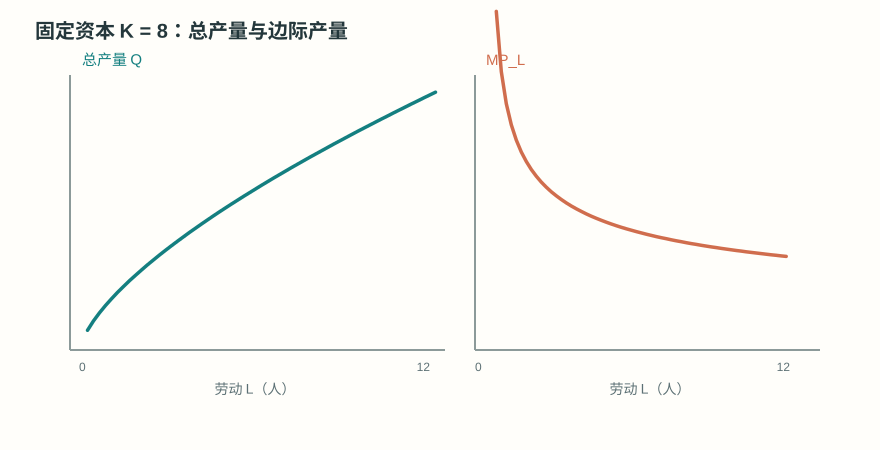
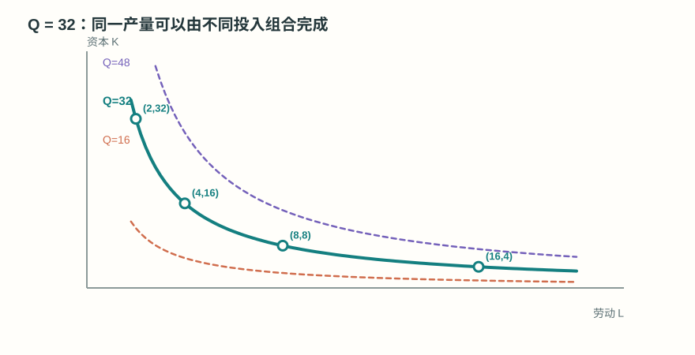

CHAPTER 11 · MICROECONOMICS
生产函数：投入与产出
投入如何转化为产出？从固定设备下的劳动边际产量，到长期的等产量曲线和规模报酬。
为什么多雇一个人，不一定多生产同样多的产品？
一家小型烘焙工坊只有一台烤箱。早上增加一名烘焙师，可能让揉面、整形和装盘同时进行，产量明显提高；继续增加员工，工作台和烤箱却开始拥挤，新增员工只能等待设备。投入数量与产出数量之间的技术关系，就是生产理论的起点。
生产函数不是销售预测，也不是利润函数。它描述在给定技术条件下，投入组合最多能生产多少产出。我们先研究一个短期问题：烤箱数量固定，能否通过增加劳动投入提高产量？再放开资本投入，比较不同规模的生产方式。
短期生产：总产量、平均产量与边际产量
设劳动投入为 L（工人数），资本投入为 K（设备单位），日产量为 Q。短期并非“几天或几个月”的固定日历区间，而是至少有一种投入暂时不能调整；本例固定 K=8，只改变 L。
当 K=8 时，函数简化为 Q=8L2/3。总产量 TP 是给定投入下的总产出；平均劳动产量 APL=Q/L；边际劳动产量 MPL 则是其他投入保持不变时，劳动增加一单位带来的额外产出。连续模型中，边际产量是总产量曲线的斜率。

| 劳动 L（人） | 总产量 Q | 新增第 L 人的离散增量 | 平均产量 Q/L |
|---|---|---|---|
| 1 | 8.00 | 8.00 | 8.00 |
| 2 | 12.70 | 4.70 | 6.35 |
| 3 | 16.64 | 3.94 | 5.55 |
| 4 | 20.16 | 3.52 | 5.04 |
| 5 | 23.39 | 3.23 | 4.68 |
| 6 | 26.42 | 3.02 | 4.40 |
| 7 | 29.27 | 2.86 | 4.18 |
| 8 | 32.00 | 2.73 | 4.00 |
表格中的“离散增量”是 Q(L)−Q(L−1)，而公式中的 MPL 是连续导数。两者在单位投入很小时近似，但并不完全相同；计算时不要混用。
边际报酬递减：它不是总产量下降
对上述函数求偏导，得到 MPL=(4/3)L−1/3K2/3。只要 L、K 为正，MPL 仍然为正；随着 L 增加，MPL 下降。因此总产量仍在增加，只是每增加一名工人所带来的增量变小。只有当边际产量变为负数时，总产量才会下降。
其机制是固定设备逐渐成为瓶颈：工人之间需要共用机器、场地和管理注意力。边际报酬递减并不意味着每个企业都从第一名员工起就递减；在某些流程里，最初的分工和协作反而会先提高边际产量。
长期生产：等产量曲线与技术替代
长期允许劳动和资本都变化。等产量曲线（isoquant）把所有能生产同一产量的投入组合连在一起。对 Q=32，有 2(LK)2/3=32，因此 LK=64；(L,K)=(4,16)、(8,8) 和 (16,4) 都在同一条等产量曲线上。

边际技术替代率 MRTSLK 衡量在产量不变时，多使用一单位劳动可以减少多少资本。对本例，MRTS=K/L。它沿等产量曲线递减，表示当劳动已经很多、资本相对稀缺时，再增加劳动所能替代的资本越来越少。完全替代和完全互补技术是重要边界：等产量曲线不一定总是平滑凸形。
规模报酬：把所有投入一起放大
边际报酬递减只问“固定 K 时，多用一点 L 会怎样”；规模报酬问“把 L 与 K 按同一比例一起扩大，会怎样”。这两个问题的比较对象不同。
生产函数中两个指数之和为4/3，大于1，所以本例具有规模报酬递增：劳动与资本同时翻倍，产出变为原来的 24/3≈2.52 倍，而不是2倍。与此同时，固定资本时劳动边际产量仍然递减。两者完全可以同时成立。
规模报酬描述物理生产关系；规模经济（长期平均成本随产量增加而下降）则是成本概念。若工资、能源、原料价格随规模变化，或技术、组织结构发生改变，规模报酬与规模经济并不必然一一对应。
生产函数实验：分别改变劳动和资本
投入组合与边际产量
使用同一教学函数 Q=2L^(2/3)K^(2/3)，观察改变一个投入与同时放大两个投入的差别。
Q=32，MP_L≈2.667，MP_K≈2.667；两种投入同时翻倍，产出约为原来的2.520倍。
边际产量是偏导数；产量和边际产量均为教学模型计算值，不是现实工厂观测数据。
资本固定为8台，劳动由8人增至16人。产量会翻倍吗？规模报酬递增是否意味着边际劳动产量也会增加？
查看解析
Q 从32变为 8×16^(2/3)≈50.80，约为原来的1.587倍，而非2倍。固定资本时 MP_L 下降；规模报酬递增描述的是劳动与资本同时按比例增加，不是单独增加劳动。
参考资料与模型边界
以下资料用于核对概念定义、推导条件和模型边界。本章数值均为明确标注的教学假设，图解独立绘制。